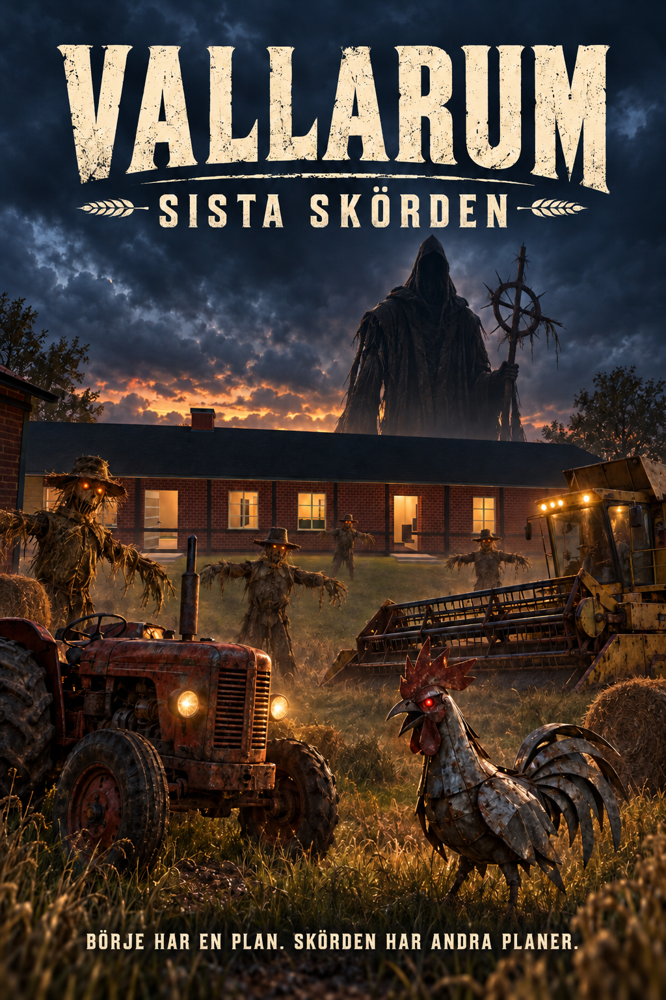

SVENSKT GÅRDSÄVENTYR · WINDOWS v0.9.1
Vallarum – Sista skörden
Hjälp Börje genom fyra uppdrag bland gårdar, fält och märkliga fiender. Kör traktorn, utforska Elldala och håll pannlampan nära när natten kommer.
Ladda ned för Windows
Nyheter och kontrollsumma
Webbversionen är pausad.
Den är inte testad för v0.9.1. Ladda ned Windowsversionen för den här utgåvan.

Kom igång
- Hämta ZIP-filen och packa upp hela innehållet till en egen mapp.
- Starta Vallarum.exe. Behåll övriga filer och mappar tillsammans med spelet.
- Välj Nytt spel och prova den valfria introduktionen.
Unity behöver inte installeras. Spelet kräver Windows 64-bit, mus och tangentbord.
Nytt i v0.9.1
Rörliga sädesmotiv, tydligare falska steg och radiofragment, ett gårdsfönster som slocknar, ryckigare halmdockor och rättade trädmaterial.
Standardkontroller
WASD: rörelse · Mus: sikta · Vänsterklick: vapen · R: ladda om · E: interagera · F: traktor · L: pannlampa · M: karta · J: journal · Esc: paus. F11 eller Alt+Enter växlar fullskärm.